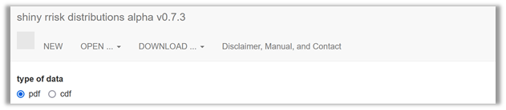
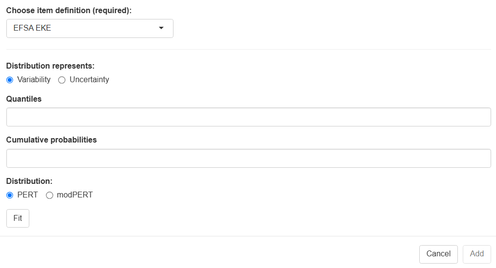
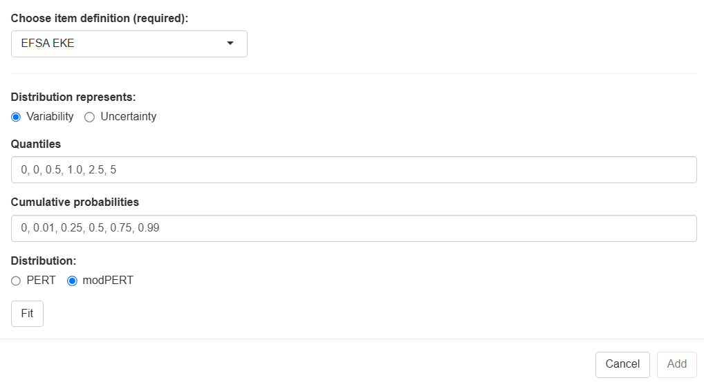
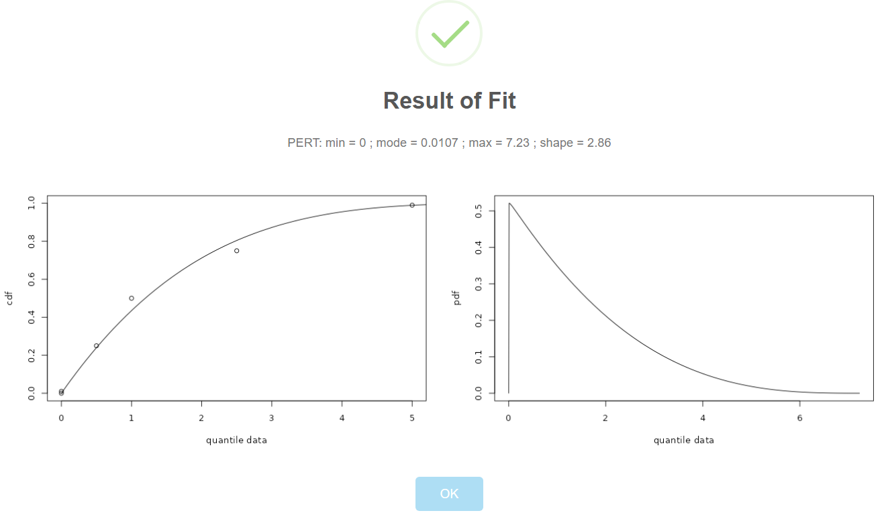

Distribution fitting
Your quick start to using shiny rrisk distributions
Getting started

Shiny rrisk distributions supports two approaches for fitting a distribution. The first approach, fitting a probability density function (pdf), requires a sample of empirical observations to be uploaded. The app then supports the identification and parameterisation of the candidate distributions. The second approach, fitting a cumulative density function (cdf), requires the definition of percentiles, which are than used as support points for distribution fitting (Figure 1). The latter option is also applicable for fitting a distribution to the results of a expert knowledge elicitation (EKE). In both cases, the results of the procedure can be imported into a shiny rrisk session.
| Choose this option when you have original data, typically a sample from a population of observations. | |
| cdf | Choose this option when you have percentiles, e.g. form an EKE process. |
Fitting a probability density function (pdf)
Fitting a cumulative density function (pdf)
Expert knowledge elicitation (EKE)

| Choose node definition | to be updated Select EFSA EKE. |
| Distribution represents | Select either variability or uncertainty. |
| Quantiles | Enter any number of quantiles, comma-separated. |
| Cumulative probability | Enter one cumulative probability for each of the quantiles, beginning with the value zero, comma-separated. |
d -> choose(3,3)
print(d)Defining an EFSA EKE node in shiny rrisk
The European Food Safety Authority (EFSA) have described a process for eliciting expert knowledge (REF). The use of EFSA EKE node involves three steps.
- Conduct of the EFSA EKE protocol, which includes the definition of a target quantity, elicitation protocol and results in the descdocumenting the data source and defining node names and corresponding statistics.
- A distribution node parameterised using input from an EFSA EKE may refer to variability or uncertainty, depending on the question formulation of the EKE process. The final result of the EKE consists of five percentiles that to be entered manually for fitting a Pert distribution (Figure 2). Details are illustrated using the example below.
(Figure 3).

The three steps in this example are the following.
- Defining the bootstrapping node X, providing a data source and requesting the two nodes Xmean and Xsd for the mean and standard deviation, respectively (?@fig-BootstrapNode2).
- Generating two nodes containing the bootstrap distributions Xmean and Xsd (automatically by shiny rrisk).
- Using the two nodes for defining a new node C for the population variability in consumption of eel per body weight consumed on single meal (?@fig-ARSnodeC).

EFSA EKE
[@O or Thomas to contribute] Brief description of the EFSA EKE or more description how shiny rrisk deals with EKE more generally.